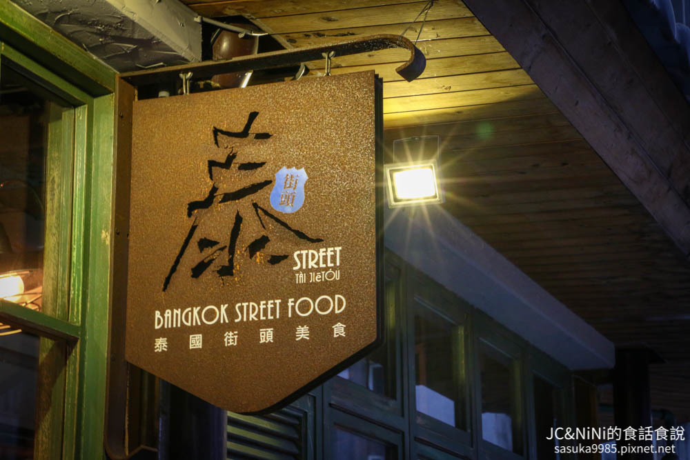
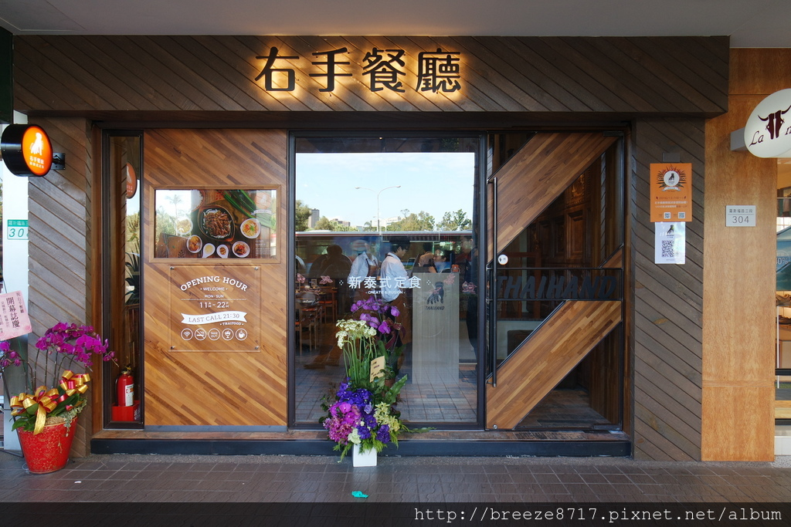
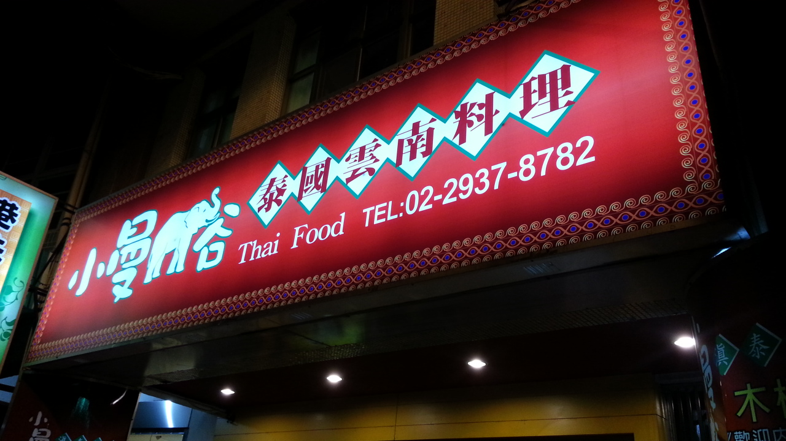
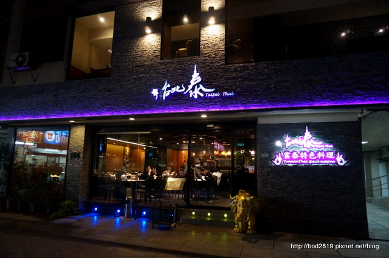

泰國料理餐廳推薦

- 地址：台北市大安區溫州街74巷6號1樓
- 電話：02 2367 6997
- 營業時間：週一～週五 11:20~15:00 17:00~20:00
週六～週日 11:30~22:00
泰街頭

- 地址：台北市中正區羅斯福路三段306號
- 電話：02 2369 2582
- 營業時間：11:00~15:00 17:00~22:00
右手餐廳

- 地址：台北市文山區指南路二段19號
- 電話： 02 2937 8782
- 營業時間：11:00~14:30 17:00~21:30
小曼谷

- 地址：台北市松山區民生東路5段164號1樓
- 電話：02 3765 2352
- 營業時間：11:00~14:30 17:00~22:00